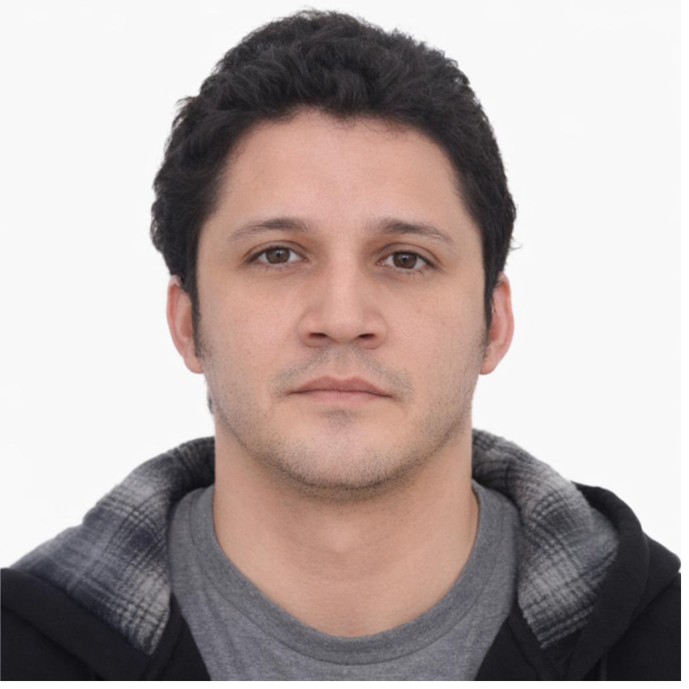
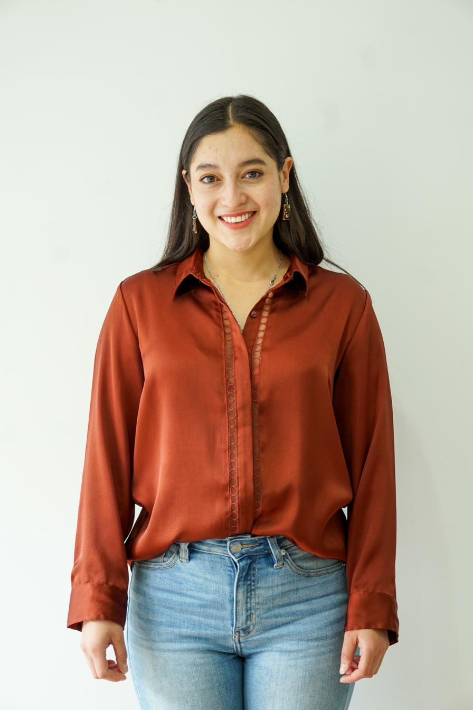
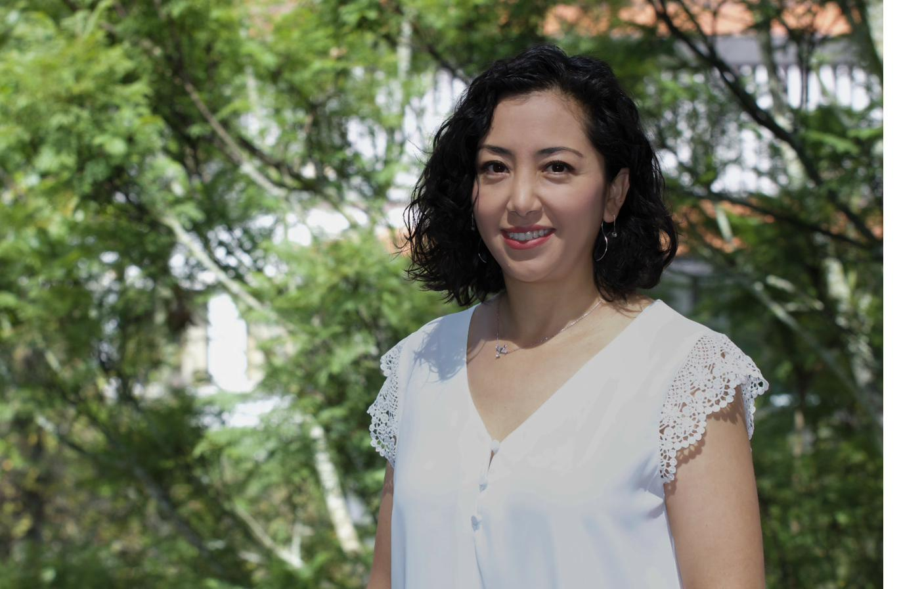

La Fundación GESAS trabaja por la gestión sostenible del agua y los recursos naturales de Ecuador mediante ciencia, innovación y alianzas comunitarias.
Monitoreo, modelación y planificación de cuencas hidrográficas
Participación activa de comunidades locales para el manejo sostenible del territorio y el agua
Restauración ecológica y adaptación al cambio climático con enfoque en biodiversidad
Quiénes somos
La Fundación para la Gestión del Agua y Sostenibilidad (GESAS) es una organización ecuatoriana de derecho privado sin fines de lucro, creada por profesionales en ciencias ambientales e ingeniería, con amplia experiencia en proyectos de campo en el Ecuador.
Nacemos con la convicción de que la ciencia aplicada, la participación comunitaria y la innovación tecnológica son las herramientas para enfrentar la crisis hídrica y climática que amenaza los ecosistemas andinos y amazónicos.
🌐 Objetivos de Desarrollo Sostenible
Nuestra misión
A través del diseño, implementación y promoción de proyectos de investigación, monitoreo e innovación en gestión hídrica, conservación de biodiversidad, restauración ecológica y cambio climático.
Proyectos de investigación aplicada para fortalecer la gestión de cuencas hidrográficas y la resiliencia de ecosistemas frente al cambio climático.
Programas de educación, capacitación y asistencia técnica con herramientas innovadoras como monitoreo ambiental y SIG.
Impulsar estrategias de restauración ecológica para mejorar la gestión del agua y la adaptación al cambio climático.
Redes de colaboración con instituciones públicas, academia, sociedad civil y organismos de cooperación nacional e internacional.
Generar y difundir conocimiento técnico-científico y buenas prácticas sobre gestión ambiental e hídrica promoviendo la innovación.
Garantizar el acceso igualitario a información, capacitación y beneficios derivados de los proyectos ambientales que implementemos.
Áreas de trabajo
Nuestros programas integran la mejor ciencia disponible con el conocimiento local, para generar soluciones reales en los territorios donde trabajamos.
Evaluación, planificación y monitoreo de cuencas hidrográficas. Modelos hidrológicos e hidrodinámicos para garantizar la calidad y cantidad del agua en comunidades y ecosistemas.
Conservación de suelos, bosques andinos y ecosistemas estratégicos. Inventarios biológicos, planes de manejo y corredores de biodiversidad.
Análisis de vulnerabilidad, estrategias de adaptación y mitigación. Reducción de riesgos ambientales y evaluación de impactos del cambio climático en cuencas hidrográficas.
Implementación de Soluciones Basadas en la Naturaleza (SbN). Restauración de paisajes degradados, revegetación de riberas y zonas de recarga hídrica.
Sistemas de información geográfica (SIG), teledetección, monitoreo remoto y modelación ambiental para la toma de decisiones basada en evidencia.
Programas de capacitación para actores locales, asistencia técnica a comunidades, escuelas y gobiernos locales. Talleres y cursos en gestión ambiental.
Únete
Buscamos estudiantes de pregrado y posgrado en ciencias ambientales, ingeniería ambiental, biología, geografía, hidrología y afines que quieran ganar experiencia real en proyectos de campo.
¿Eres parte de una universidad, empresa o institución pública? Podemos colaborar en proyectos de investigación, consultoría técnica, monitoreo ambiental o programas de responsabilidad social.
Proponer una alianzaTu donación financia proyectos de investigación aplicada, programas de restauración ecológica y capacitación comunitaria en las cuencas hidrográficas del Ecuador.
Con tu aporte, la Fundación GESAS puede desarrollar proyectos con impacto medible en el territorio.
Nuestro equipo
Somos tres profesionales apasionados por la ciencia aplicada al servicio del agua y la vida.

Doctor en Recursos Hídricos con experiencia en modelamiento de ríos de montaña y monitoreo hidrológico. Ingeniero Civil por la Universidad de Cuenca y MSc por la Universidad Técnica de Delft, he desarrollado mi carrera en investigación aplicada y modelamiento hidráulico, obteniendo una distinción institucional por mi producción científica en 2021. He publicado en revistas como Water (MDPI), Advanced Modeling and Simulation in Engineering Sciences, Water Resources Management y La Granja. Me motiva el desarrollo de soluciones técnicas y científicas para la gestión sostenible del agua.

Investigadora en hidrología andina y sociohidrología, con más de cinco años de experiencia en investigación aplicada y trabajo de campo. Su trabajo se centra en la gestión sostenible del agua, sistemas de riego y estrategias para la adaptación a sequías. Vicepresidenta de la Fundación, apoyando el desarrollo de proyectos de investigación, innovación y fortalecimiento comunitario.

Ingeniera Agrónoma y Ph.D. en Recursos Hídricos con más de 15 años de experiencia en investigación aplicada, docencia universitaria y consultoría ambiental. Especialista en hidrología andina, dinámica de neblina y sostenibilidad de sistemas de riego, ha publicado en revistas internacionales y fue investigadora postdoctoral. Ejerce la Dirección Ejecutiva y representación legal de la Fundación, liderando su visión estratégica y alianzas institucionales.
Contacto
Ya sea que quieras apoyarnos, colaborar o simplemente conocer más, estamos aquí para conversar.
Primero de Mayo y Juan Vives
Yanuncay, Cuenca, Azuay – Ecuador
0984442600 · (07) 2174230
@FundacionGESAS